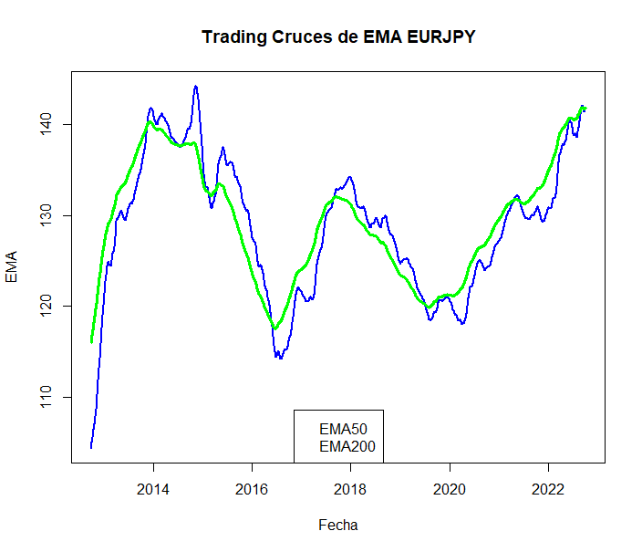
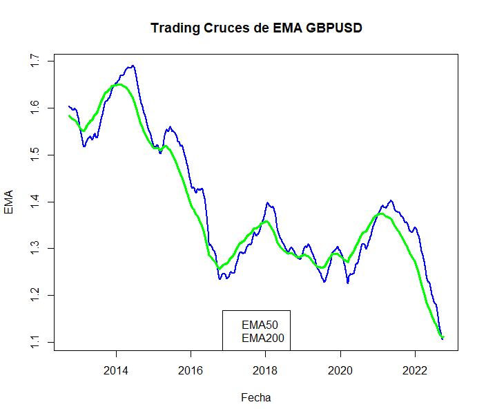
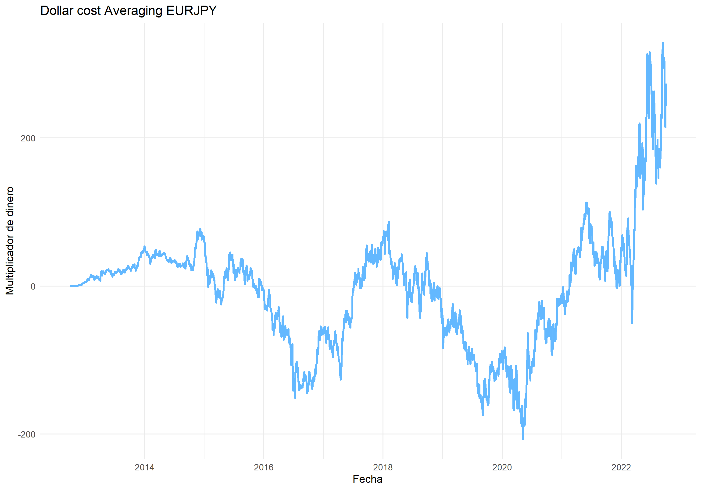
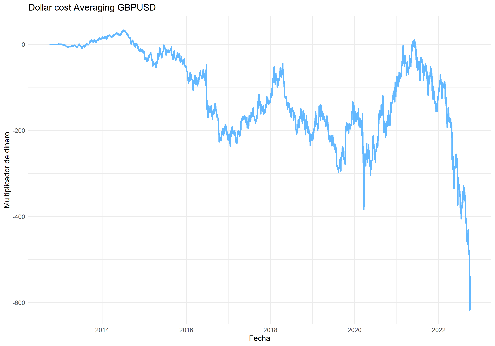

Trading vs value investing
Resumen
En los últimos 10 años ha existido la constante discusión sobre la efectividad del trading sobre el value investing, provocando sin cesar una duda de cual es más rentable y segura. Así con la finalidad de aproximarnos a una posible respuesta analizamos dos bases de datos de 2 diferentes divisas, EUR/JPY y GBP/USD, que contienen los precios de apertura y cierre del mercado, junto a sus máximos y mínimos correspondientes, la fecha y su porcentaje de variación. Los resultados obtenidos dieron pie a concluir que si bien en el trading existe mayor probabilidad de obtener una rentabilidad superior, a su vez existe un riesgo asociado mucho más alto que en el value investing. En consecuencia podemos creer que dependiendo del perfil del inversionista es viable elegir tanto una opción como la otra, y en algunos casos las dos.
Introducción
Existe una constante duda en el mercado financiero sobre cual de los enfoques es mejor entre análisis técnico y el fundamental (trading vs value investing), métodos que son clave a la hora de invertir dinero, al punto en que tanto académicos como profesionales no han podido encontrar una respuesta clara. Por una parte Benjamin Graham (Inversor, autor y profesor), conocido como el padre del “value investing”, quien afirma que el trading es meramente especulativo, y a si vez que el value investing es una inversión, por otro lado, los méritos del trading son reconocidos por quienes lo practican llegando a ganar abismales sumas de dinero.
Tanto Benjamin Graham como los traders (quienes practican el trading) tienen argumentos para creer que su punto de visto es el correcto, pero cual es la pregunta que ambos quieren responder ¿Es el trading mejor que el value investing o viceversa? ¿Cuál es más rentable?, ¿Existe la certeza de que, si funcionó ayer, también funcionara mañana? ¿Cómo podemos maximizar las ganancias en ambos casos? ¿Cuál es la clave de cada método?, ¿Son compatibles?. Responder estas preguntas nos entrega un punto de vista interesante, ya que se puede trazar una ruta inicial objetiva para ea través de la estadística, logrando un método base para lo que se conoce hoy en día como análisis bursátil.
Con el objetivo de encontrar el mejor método para maximizar ganancias de manera eficiente Analizaremos los dos métodos, trading y value investing, con los factores que podrían ser clave para resolver las preguntas antes planteadas, con el fin de entender si algún método es mejor que otro, o compatibles.
Este trabajo estará divido en 4 distintas secciones: Primero se hará un análisis particular con los datos de distintos mercados financiero, tanto para el trading como para el value investing, sentando las bases y estructuras de cada método. Luego construiremos las estrategias que mejor se adapten para maximizar ganancias y eficiencia. Avanzaremos con puntos máximos y mínimos de entrada, así ahondando en el tema de que si conocemos los resultados el éxito está garantizado. Y antes de concluir haremos tres experimentos para cada mercado financiero, que se desarrollaran durante el transcurso del proyecto.
Desarrollo
Datos
Las bases de datos fueron encontradas Investing.com Español - Finanzas, Noticias y Bolsa de Valores las cuales se hicieron distintas modificaciones, que corresponden a cambiar el tipo de la variable, entre estas están Fecha, Vol., Var, y ajustar las variables tipo Number por un ponderador debido a la mal lectura del archivo. Así se presentan las variables en la tabla a continuación
| Variables | Tipo | Descripción |
|---|---|---|
| Fecha | Date | Fecha en que el instrumento fue tranzado |
| Último | Number | Precio de cierre |
| Apertura | Number | Precio de inicio |
| Máximo | Number | Precio máximo alcanzado durante la sesión |
| Mínimo | Number | Precio mínimo alcanzado durante la sesión |
| Variación | Number | Variacion entre el precio de inicio y cierre |
Resultados
A continuación podremos observar los resultados obtenidos a través de gráficos y distintos ejercicios para entender la manera de obtener los beneficios máximos, junto con beneficios más “reales”. Cada proyección estará hecha con las dos divisas antes mencionadas para tratar de evitar ciertos sesgos relacionados.
Para iniciar analizamos la máxima ganancia posible en ambas dicisas como se puede observar en el grafico 1 y 2
Gráfico 1

Gráfico 2

Al analizar estos resultados podemos darnos cuenta de que no existe forma real en alcanzar estos resultados, que fueron dado por el hecho de conocer los mínimos y máximos con anterioridad, pero nos sirve para lograr obtener una cota para los resultados.
Podemos notar con más detalle cierta sutileza en la comparación de estos gráficos en donde el primero alcanza una rentabilidad varias veces mejor que el segundo, esto es debido a que comparamos dos economías distintas, la de la unión europea versus la japonesa, es decir, el euro versus el yen japonés, y por otra parte comparamos economias como la inglesa versus la estadounidense, es decir, la libra esterlina versus el dólar americano. Con el contexto podemos entender como se relacionan los pares de divisas, si la economía, politica, y aspectos sociales son mejor en algún país esto repercutira de manera directa en el precio del par de la divisa. Esto genera una volatilidad que es lo que nos permite rentabilizar, como antes mencionamos este gráfico es lo más perfecto que se pudo operar en el mercado, ya que se centro en comprar en puntos mínimos y vender en puntos máximos con 100% de exito, si bien esto nos lleva a una restricción que es una operación por día, se aplicara para los siguientes graficos de igual manera.
Los ultimos detalles del gráfico nos dan apreciar que el par está acotado por las fechas 2012-2022
A continuación veremos los gráficos 3 y 4 que consisten en el primer aspecto a tratar, el trading. Para esto se considero una estrategia simple de medias moviles exponenciales(EMA) de 50 y 200 periódos. La estrategia consiste en el momento en que la EMA de menos periódos cruce la otra, imponer una compra o venta para rentabilizar
Gráfico 3

Gráfico 4

Como se puede observar a simple vista la cantidad de cruces no es muy alta y por lo tanto no disponemos de muchas operaciones, con certeza se puede dar a conocer que cada cruce implica acertar en la operación, esto es debido a que la estrategia se basa en cambios de tendencia. Los cambios de tendencia se dan cuando el precio alcista se convierte en bajiste o viceversa, de esta manera podemos asegurar operaciones cada ciertos años con una probabilidad de acierto cercana al 100%.
Las compras o ventas se mantienen hasta que exista otro cruce lo que nos deja una viabilidad alta en la estrategia, debido a una particularidad del mercado que se llama fractalidad. La fractalidad nos permite transformar periódos diarios en periódos de horas o minutos, por lo que mientras llevamos acabo estas largas operaciones podemos hacer “mini operaciones” durante el día llamado tranding intradía.
Otra de las ventajas absolutas que se pueden ver es que no tenemos restricciones a la hora de si el precio sube o baja, en ambos casos se puede generar una sustanciosa rentabilidad y de esta manera no limitarnos a la compra.
Como se puede comparar en los dos pares de divisas las EMA son muy simples de ver, esto quiere decir que los cruces no requieren una habilidad innata para apreciarlos y estos dejan una sustanciosa rentabilidad. Al ser una herramienta visual tiene una única desventaja demanda un tiempo mayor sobre la persona que quiera utilizar este método y una paciencia más grande que el promedio por los largos tiempo de espera.
Sin duda los hechos lo verifican y cualquier persona se puede dedicar al trading siendo consistente con la estrategia, lo que nos deja a responder algunas dudas en cuestión. Es realmente especulación?, bueno si nos ponemos a pensar no existe nada que indique lo contrario, ya que no se necesitan grandes conocimientos financieros para entender la estrategia, pero como antes mencionado la palabra clave es esa “estrategia”, al haber un desarrollo lógico detrás podemos decir con claridad, no es especulación
Dentro de los últimos dos gráficos podemos ver como se comporta el dollar cost avareging (promediar), método proclamado por Graham si es que no se tiene mucha consiencia sobre los mercados financieros. En los gráficos 5 y 6 veremos los dos lados de la moneda, unas ganancias consistentemente altas, pero tambien unas pérdidas exageradamente pronunciadas
Grafico 5

Gráfico 6

En estos dos ultimos gráficos podemos ver como claramente existen dos versiones opuestas, una rentabilidad sustanciosa y un perdida exagerada. El método en si es consistentes para todo tipo de activos, pero hay que tener cuidado a la hora de comparar divisas, ya que el par inverso podria resultar sustanciosamente más fuerte, ej: GBPUSD -> USDGBP, ya que como este método se centra en la compra a cualquier precio con tal de promediar los costes, cuando existen caidas de la magnitud como en 2022, nos damos cuenta de que existe una restricción que nos puede generar muchas pérdidas.
El método consiste en nada más que promediar a medida que pasan los dias y así obtener un precio preferente estable, como se ve en el gráfico 5 es sin duda una forma de rentabilizar de manera muy tangible. Cabe decir que existen más detalles de este método, pero como estrategia de un inversor defensivo, es decir, no usa de su tiempo para invertir, es sin duda mejor que la del trading.
El value investing también abarca otros factores como: la politica del país, economía y otros factores incidentes, pero en este informe no los contemplaremos debido a su complejidad.
Con respecto a la información entregada anteriormente podemos entender que ambos métodos son rentables, sin embargo existe una diferencia crucial a la hora de optar por ellos, el tiempo definitivamente es clave a la hora de elegir cual estrategia es mejor, por lo que se puede ultimar es las estrategias son dependientes totalmente del factor tiempo
Conclusión
Como se dio a entender durante el desarrollo del reporte, ambas estrategias tienen sus aspectos positivos y negativos, que a su vez nos dan a dislumbrar ciertas respuestas a dudas que podriamos tener, ambas estrategias son de caracter no-especulativas a un nivel de inversión básico, es decir, no profesional, ya que si abarcamos este ambito podriamos decir incluso que tanto trading como value investing serián especulativas.
Frente a los innegables resultados el trading es la opción más rentable a comparar tanto por su facilidad como por su acierto, sin embargo el value investing abre las puertas a distintas posibilidades, debido a que en mercados inflacionarios (alcistas) podemos sin lugar a dudas optar con total seguridad por esta opción,
Para finalizar cabe resaltar que sin importar el método las ganancias máximas estan muy alejadas de la realidad, por lo tanto no sirve para más que iluminar un camino que quiere alcanzar la mejor estrategia, pero nunca llegara a encontrar debido a su carácteristica útopica
Referencias
www.investing.com
El inversor inteligente, Benjamin Graham